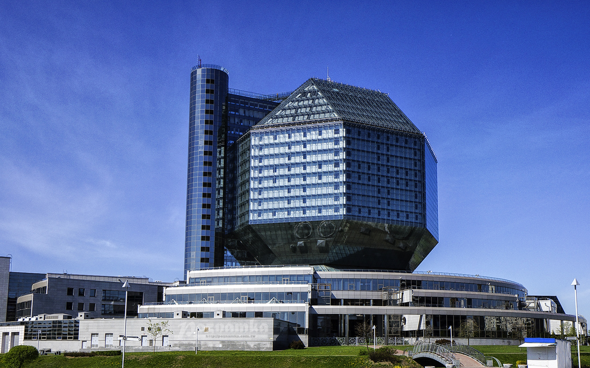
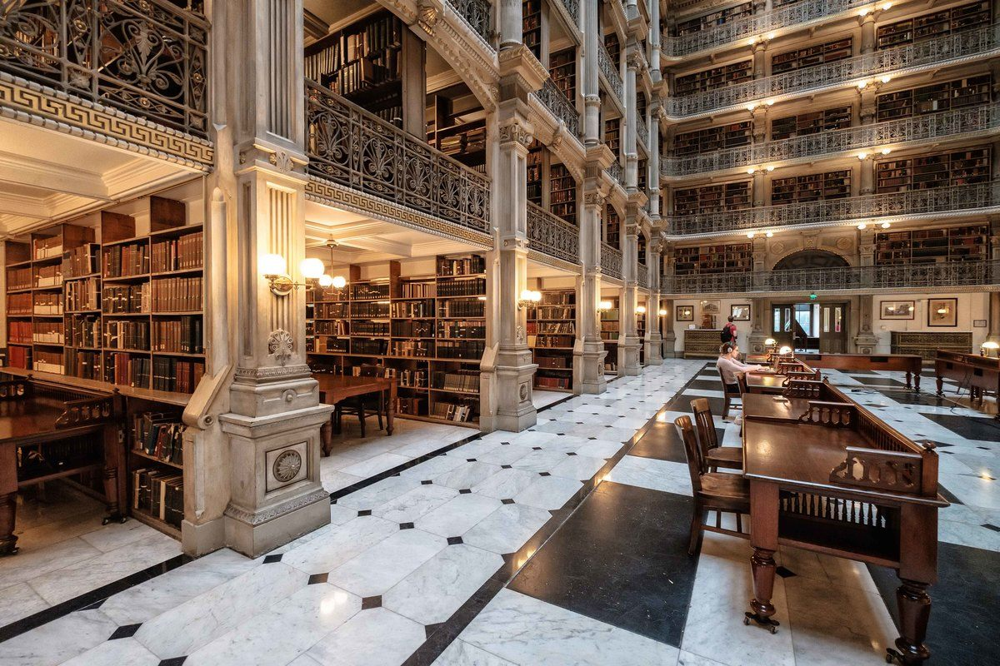

.
Национальная библиотека

Национальная библиотека – визитная карточка Беларуси. Сегодня это не
только богатейшее собрание книг, но и огромный мультифункциональный центр,
где совместились высокие технологии, ультрасовременный дизайн и необычная
архитектура. Главная библиотека страны была основана в 1922 году при
Белорусском государственном университете и получила название Белорусской
государственной и университетской библиотеки. Первоначально ее фонды
насчитывали 60 тыс. экземпляров. В 1926 году Белорусская государственная
библиотека стала самостоятельным учреждением. Тогда же принято решение о
строительстве для нее нового здания. Известный белорусский архитектор
Георгий Лавров создал необычный проект, в котором воплотил математическую
систему координат. Сегодня в этом здании – одном из немногих памятников
эпохи конструктивизма в Беларуси – заседает Совет Республики Национального
собрания.

В годы Великой Отечественной войны Белорусская государственная библиотека
имени Ленина потеряла около 83 % фондов и специальное оборудование.
Полностью вывезены фонды редких и старопечатных книг, абонемента и
читальных залов, вместе с литературой сожжено здание резервного фонда. В
послевоенные десятилетия библиотека возрождалась и развивалась, расширяя
собрания, налаживая международные связи. В 1992 году, уже в суверенном
государстве, она получила новое название – Национальная библиотека
Беларуси. С течением времени фонды значительно увеличились, поэтому
возникла необходимость строительства нового, более масштабного и
современного здания. Еще в 1989 году был проведен всесоюзный конкурс на
лучший проект будущего сооружения. Его победители – архитекторы Виктор
Крамаренко и Михаил Виноградов – предложили модель "белорусского алмаза",
в котором сочетались функциональность и современный дизайн. Идея
предполагала возведение оригинального здания в виде ромбокубооктаэдра –
сложного многогранника из 18 квадратов и 8 треугольников, расположенного
на подставке-подиуме (стилобат). Поверхность этого "бриллианта" покрыта
стеклом. По задумке авторов, форма ограненного алмаза символизирует
ценность знаний и бесконечность познаваемого мира. Тем не менее, до
момента утверждения и реализации смелого проекта прошло 13 лет.
Грандиозное строительство, в котором было задействовано около 5000 человек
и 200 организаций, началось в 2002 году. В напряженные периоды ежедневно
на площадке находилось до 3000 человек. Работы велись 24 часа в сутки.
Открытие Национальной библиотеки Беларуси с участием Президента состоялось
16 июня 2006 года. Национальная библиотека расположена в парковой зоне
Слепянской водно-зеленой системы. Перед фасадом здания установлена
бронзовая фигура белорусского первопечатника Франциска Скорины (авторы
Александр Дранец и Виктор Крамаренко). Директор библиотеки – доктор
педагогических наук, профессор Роман Мотульский. Собрание "алмаза знаний"
составляет около 9 млн экземпляров на различных носителях. Это печатные
издания, рукописи, микрокопии документов, электронные и другие материалы,
созданные в Беларуси и других странах мира на более чем 80 языках.